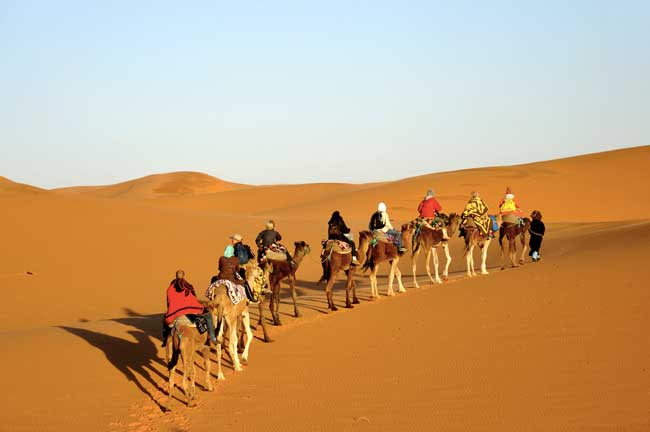
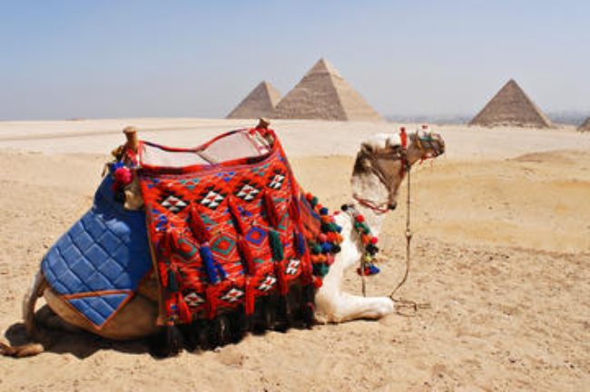
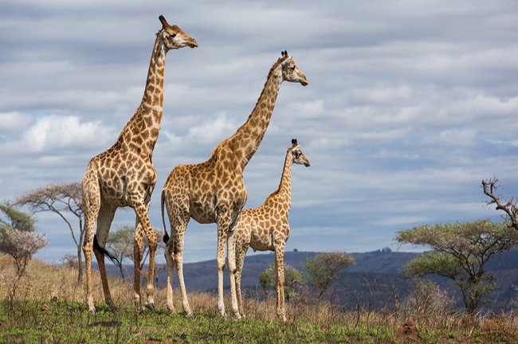
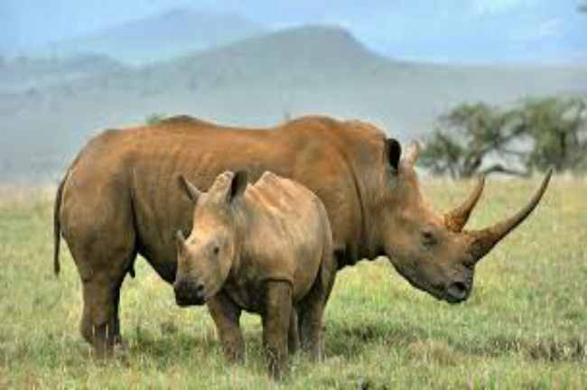
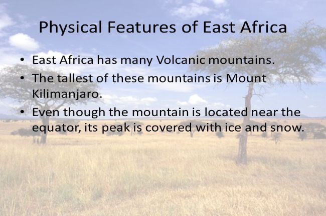
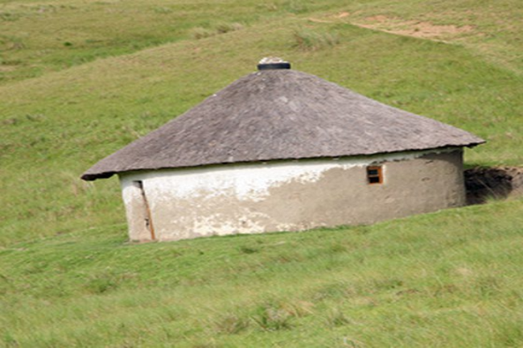
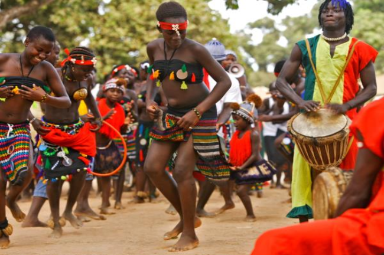
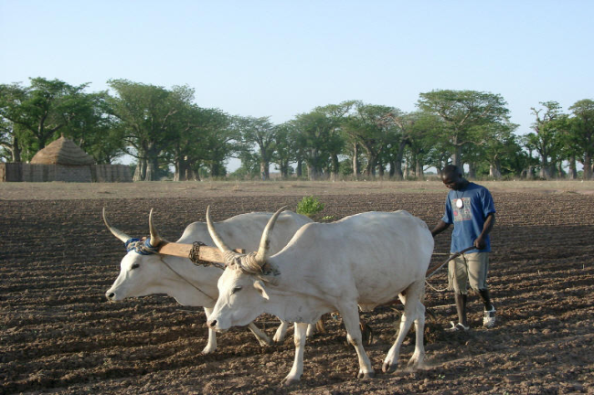
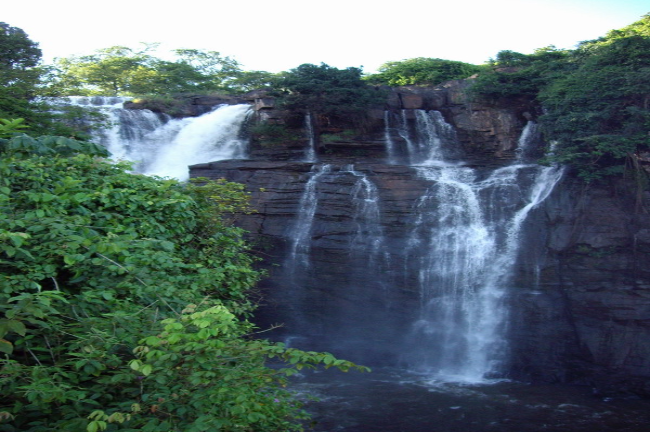
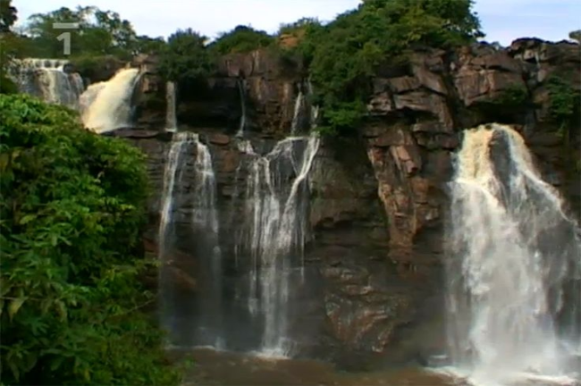

North Africa is a group of Mediterranean countries situated in the northern-most region of the African continent.
The countries of North Africa share a common ethnic, cultural and linguistic identity that is unique to this region.
North west Africa has been inhabited by Berbers since the beginning of recorded history,
while the eastern part of North Africa has been home to the Egyptians.
Following the Muslim conquest in the seventh century C.E.,
the region underwent a process of Arabization and Islamization that has defined its cultural landscape ever since.


Learn More
South Africa is the southernmost region of the African continent,
variably defined by geography or geopolitics, and including several countries.
The term southern Africa or Southern Africa,generally includes Angola, Botswana, Lesotho, Malawi,
Mozambique, Namibia, South Africa, Swaziland, Zambia, and Zimbabwe.
From a political perspective the region is said to be unipolar with South Africa as a first regional power.


Learn More
Eastern Africa is the easterly region of the African continent,
variably defined by geography or geopolitics.
In the United Nations Statistics Division scheme of geographic regions.
Due to colonial territories of the British East Africa Protectorate and German East Africa,
the term East Africa is often (especially in the English language) used
to specifically refer to the area now comprising the three countries of Kenya, Tanzania and Uganda.
However, this has never been the convention in many other languages, where the term generally had a wider,
strictly geographic context and therefore typically included Djibouti, Eritrea, Ethiopia, and Somalia.


Learn More
West Africa, also called Western Africa and the West of Africa, is the westernmost subregion of Africa.
West Africa has been defined as including 18 countries: Benin, Burkina Faso, the island nation of Cape Verde, Gambia, Ghana, Guinea, Guinea-Bissau,
Ivory Coast, Liberia, Mali, Mauritania, Niger, Nigeria, the island of Saint Helena, Senegal, Sierra Leone, São Tomé and Príncipe and Togo.
The population of West Africa is estimated at about 362 million people as of 2016.


Learn More
Central Africa is the core region of the African continent which includes Burundi,
the Central African Republic, Chad, the Democratic Republic of the Congo, and Rwanda.
The basin of Lake Chad has historically been ecologically significant to the populations of Central Africa,
with the Lake Chad Basin Commission serving as an important supra-regional organization in Central Africa.


Learn More